Problematica y Solucion
En México, el artículo 3ro de la Constitución Política de los Estados Unidos Mexicanos establece que todo ciudadano tiene derecho a una educación laica y gratuita, siendo su obligación asistir a la escuela y cursar toda el área básica.
Este artículo fue promulgado en 1917, pero no fue hasta el sexenio del presidente Adolfo López Mateos (1958-1964) que se impusieron mejoras a las instituciones educativas, teniendo como principales puntos a atender a una mejora en la educación, implementación de actividades recreativas y la más importante, la alimentación.
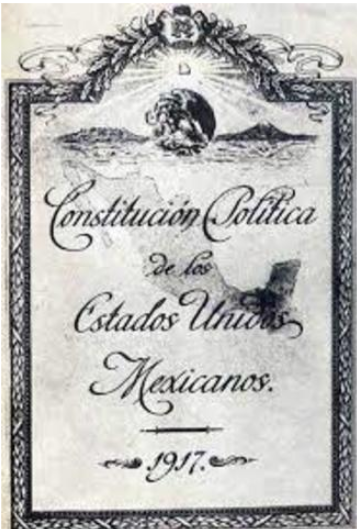La idea de comedores dentro de instalaciones educativas surgió al notar que gran parte de los estudiantes (Menores de 18 años) no tenían los ingresos suficientes para comer durante el día. Con base a la Secretaría de Salud, ocho de cada diez niños en México van a la escuela en completo ayuno. Es por ello que se decidió establecer un servicio en todas las escuelas públicas encargado de la repartición de alimentos entre el alumnado.
Actualmente, tanto escuelas públicas como privadas cuentan con por lo menos un servicio de cafetería, pero, ¿Realmente funcionan? En los últimos años la población en México ha ido acrecentando, orillando a las escuelas a aceptar más alumnos de los que estaba diseñado a controlar originalmente, no es raro escuchar casos de que salones que están hechos para un máximo de 30 alumnos tengan que ser utilizados por 50 o más.
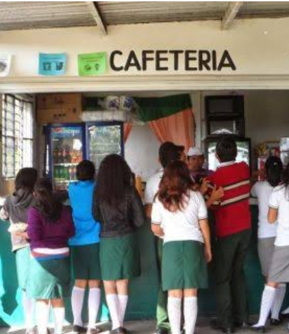Esto no solo dificulta la educación apropiada a la población, sino también que, al ser una cantidad de alumnos cada vez mayor, las cafeterías escolares no cumplen con todos los requerimientos básicos para su correcto funcionamiento. Las deficiencias más comunes a encontrar son:
- Falta de espacio.
- Falta de personal.
- Falta de higiene.
- Falta de recursos y/o alimentos.
- Precios elevados.
- Venta mayoritaria de comida procesada y alta en grasas y azúcares.
Estos detalles afectan de alguna forma u otra a los estudiantes (Y además al personal de la escuela, quienes también llegan a ocupar la cafetería), generando un gran problema altamente ignorado.
Lightvery es una empresa en progreso que, por medio de Donkey Food, ofrece una opción para la mejora del servicio alimentario en instalaciones educativas, teniendo como primer objetivo la cafetería en el CECyT 9 y, a partir de los resultados que se logren obtener determinar cuál es la mejor estrategia para expandirnos a más escuelas públicas y privadas.
Para iniciar este proyecto (Basándonos en el método científico) y ya habiendo observado la situación y analizado el problema, decidimos primeramente recabar información sobre las dos perspectivas en una cafetería escolar: La del alumno y la del personal.
Con la aplicación de un cuestionario al alumnado obtuvimos que: 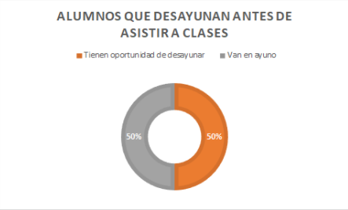 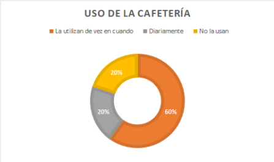 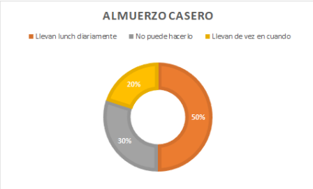 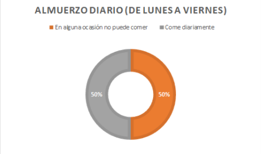 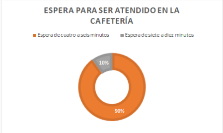 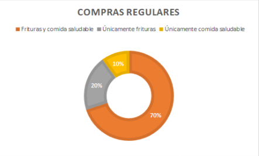 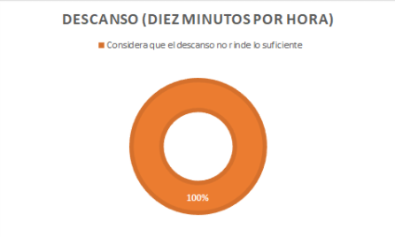 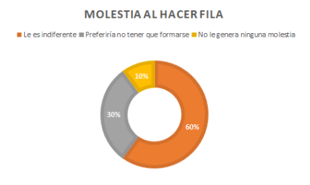 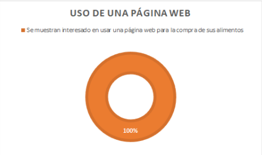
Por otro lado, con una entrevista al personal se obtuvo que:
- Se ofrecen una variedad de productos, tanto alimentos como bebidas.
- Lo más vendido siempre es la pizza, los chilaquiles y la sopa instantánea.
- Lo menos vendido son únicamente las sincronizadas.
- Los precios oscilan desde $1 a los $45.
- La cafetería suele llenarse rápidamente, pero gracias a la pandemia, se han perdido cerca del 80% del total que venían.
- No tienen mayores problemas para atender a todos los alumnos.
- Regularmente tardan a lo mucho tres minutos en despachar a un alumno.
- Se procura atender a más de uno a la vez (De tres en tres)
Con esta información procedemos a formular nuestra hipótesis, la cual se rige fundamentalmente con la idea de la creación de una página web para la compra y venta del alimento.
Es mucho más fácil acceder a una página web que a un establecimiento físico, así sea a unos metros de distancia, ya que con un solo clic se pueden lograr muchas más cosas.
Se tiene planteado erradicar los tiempos de espera y el contacto innecesario con compañeros (Especialmente en estos tiempos de pandemia) con el uso de un programa de fácil acceso e interpretación que permita al alumno elegir qué consumir y cuándo consumirlo sin verse envuelto en complicaciones redundantes.